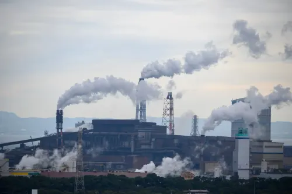
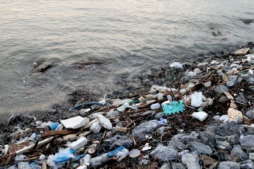
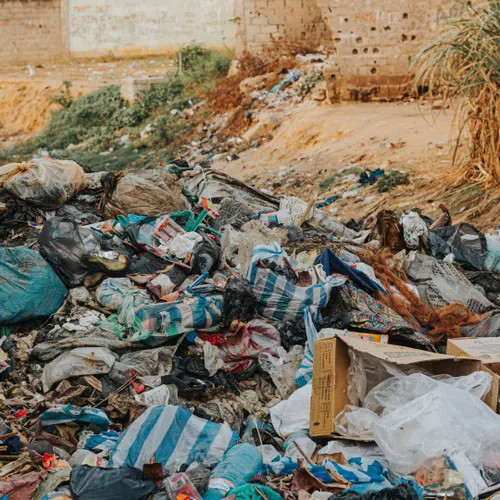
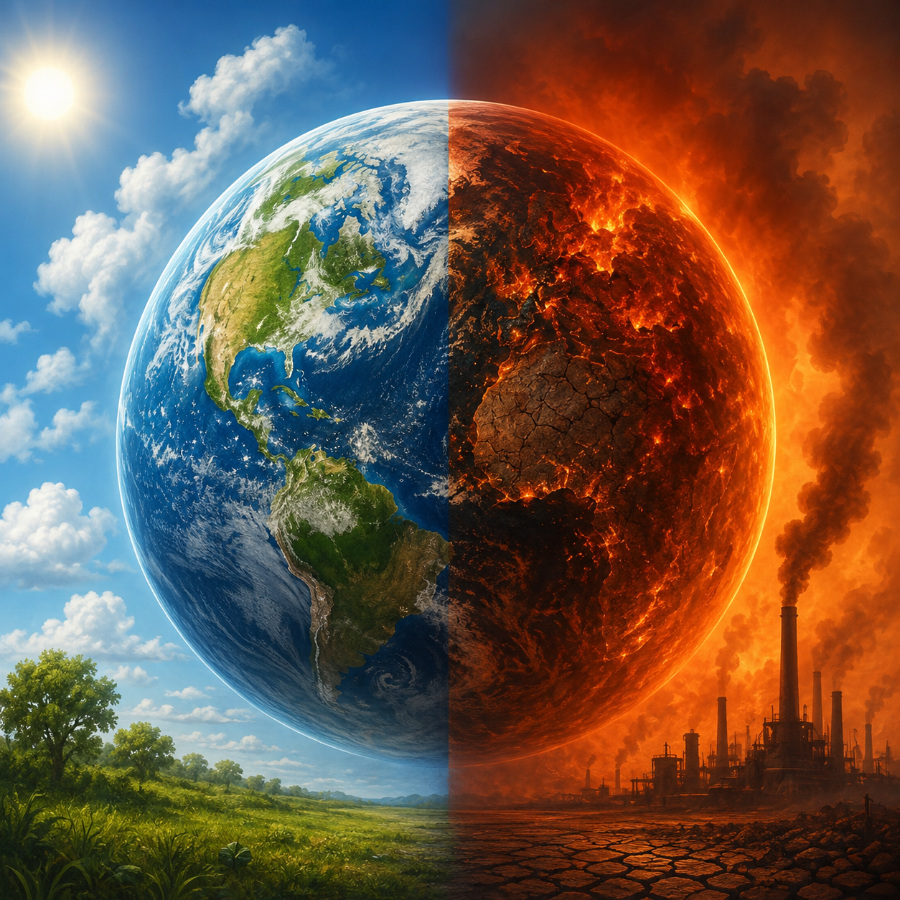
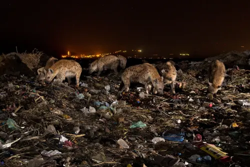
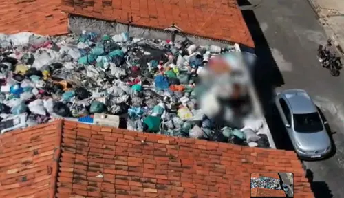

Se conscientize pelo seu mundo
Sobre o projeto
O Mundo Sustentável é um projeto desenvolvido com o objetivo de conscientizar a população sobre a separação correta dos resíduos, reciclagem, compostagem e os impactos ambientais causados pelo descarte inadequado do lixo, ele busca resolver problemas como a falta de informação e mostra como realmente é o mundo.
O projeto Mundo Sustentável foi desenvolvido por um aluno do curso técnico em Desenvolvimento de Sistemas como parte do Trabalho de Conclusão de Curso (TCC). A iniciativa surgiu da necessidade de promover a conscientização ambiental por meio da tecnologia, oferecendo informações sobre reciclagem, compostagem, descarte correto de resíduos e preservação do meio ambiente.
Objetivo do projeto
Promover educação ambiental para todas as idades
Incentivar a reciclagem e a separação correta do lixo
Explicar o destino correto de cada tipo de resíduo
Conscientizar sobre a preservação do meio ambiente
Explore os tópicos
Clique em um dos cartões abaixo para navegar diretamente até o conteúdo.
Tipos de resíduos
Vidro, papel, metal, plástico, orgânico, eletrônico e mais — saiba onde descartar cada um.
Ver conteúdoImpactos ambientais
Poluição do ar, da água, do solo e a saúde pública: entenda causa e consequência.
Ver conteúdoCompostagem e Chorume
Como transformar lixo orgânico em adubo e entenda os riscos do chorume.
Ver conteúdoDados interessantes
Números e curiosidades sobre reciclagem e o tempo de decomposição do lixo.
Ver conteúdoContato
João Victor
Desenvolvedor do projeto Mundo Sustentável
Tipos de Resíduos
Para facilitar a separação correta, cada tipo de material possui uma cor e categoria específica. Conheça as principais categorias e saiba o que descartar em cada uma delas.
Vidro
Garrafas, potes, copos e frascos de vidro. Deve ser descartado inteiro quando possível para evitar acidentes.
- Garrafas e potes
- Frascos de perfume
- Vidros de conserva
Papel
Jornais, revistas, caixas, papelão e folhas. Devem estar secos e limpos para serem reciclados corretamente.
- Jornais e revistas
- Caixas e papelão
- Folhas e cadernos
Metal
Latas de alumínio, aço, tampas e embalagens metálicas. Um dos materiais mais valiosos para a reciclagem.
- Latas de alumínio
- Latas de aço
- Tampas e pregos
Plástico
Embalagens, garrafas PET, sacolas e utensílios plásticos. Verifique o símbolo de reciclagem na embalagem.
- Garrafas PET
- Embalagens de alimentos
- Sacolas plásticas
Resíduo Perigoso
Pilhas, baterias, medicamentos, tintas e produtos químicos. Nunca descarte no lixo comum — procure pontos de coleta especiais.
- Pilhas e baterias
- Medicamentos vencidos
- Tintas e solventes
Orgânico
Restos de comida, cascas de frutas e legumes, borra de café e resíduos de jardim. Podem ser transformados em adubo por compostagem.
- Cascas e restos de frutas
- Borra de café e chá
- Resíduos de jardim
Rejeito
Materiais que não podem ser reciclados nem compostados, como papel sujo, fraldas e isopor. Devem ir para o lixo comum.
- Papel higiênico usado
- Fraldas descartáveis
- Isopor e espumas
Eletrônico (e-lixo)
Celulares, computadores, eletrodomésticos e cabos. Contêm metais pesados e devem ser entregues em pontos de coleta específicos.
- Celulares e computadores
- Cabos e carregadores
- Eletrodomésticos
Sobre o criador
João Victor Nunes Bagatim
Desenvolvedor Front-end · TCC 2026
Este projeto foi desenvolvido como Trabalho de Conclusão de Curso com o objetivo de conscientizar sobre sustentabilidade, descarte correto de lixo e preservação ambiental. O site reúne informações sobre reciclagem, terra orgânica, chorume e muito mais.
Impactos Ambientais
O descarte incorreto do lixo não afeta só a paisagem — ele gera uma cadeia de efeitos que atinge o ar, a água, o solo e a saúde de todos nós. Conheça os principais impactos e entenda a causa e a consequência de cada um.

🔥 Poluição do arPoluição do Ar
Queima de lixo a céu aberto e emissão de gases por lixões e indústrias sem tratamento adequado.
Liberação de gases tóxicos e material particulado, agravando doenças respiratórias e contribuindo para o aquecimento global.
Quando o lixo é queimado de forma irregular, substâncias como dioxinas e monóxido de carbono são lançadas na atmosfera. Isso piora a qualidade do ar, especialmente em áreas urbanas densamente povoadas.

💧 Poluição da águaPoluição da Água
Descarte de lixo em rios, mares e bueiros, além de chorume de lixões que se infiltra em cursos d'água.
Contaminação de rios, lençóis freáticos e oceanos, causando morte de espécies aquáticas e doenças em quem consome a água.
O chorume, líquido escuro gerado pela decomposição do lixo, é altamente tóxico. Quando atinge a água, reduz o oxigênio disponível e prejudica toda a cadeia alimentar aquática.

🌍 Contaminação do soloContaminação do Solo
Acúmulo de resíduos em lixões irregulares e descarte de materiais tóxicos diretamente no solo.
Perda de fertilidade da terra, contaminação de plantações e infiltração de substâncias tóxicas no lençol freático.
Metais pesados e produtos químicos presentes no lixo podem levar décadas para se decompor, tornando áreas inteiras impróprias para agricultura ou moradia.

🌡️ Aquecimento globalEfeito Estufa e Aquecimento Global
Decomposição de resíduos orgânicos em lixões, que libera gás metano, e queima de lixo, que libera CO₂.
Aumento da temperatura média do planeta, derretimento de geleiras e eventos climáticos mais extremos.
O metano é um gás de efeito estufa muito mais potente que o CO₂. Lixões a céu aberto são uma das principais fontes desse gás em áreas urbanas.

🐾 Perda de biodiversidadePerda de Biodiversidade
Destruição de habitats naturais para instalação de lixões e ingestão ou aprisionamento de animais em resíduos, como plásticos.
Redução de populações de animais e plantas, desequilíbrio ecológico e, em casos extremos, extinção de espécies.
Animais marinhos e terrestres frequentemente confundem plástico com alimento ou ficam presos em resíduos, o que compromete espécies inteiras ao longo do tempo.

🩺 Saúde públicaDoenças e Saúde Pública
Acúmulo de lixo em áreas urbanas, favorecendo a proliferação de ratos, baratas e mosquitos.
Aumento de casos de doenças como dengue, leptospirose e cólera, além de contaminação de alimentos e água.
Locais com lixo acumulado se tornam ambientes propícios para vetores de doenças, colocando em risco comunidades inteiras, especialmente em regiões com saneamento precário.
Compostagem e Chorume
Boa parte do lixo doméstico é orgânica e pode virar adubo em vez de virar problema. Entenda como fazer compostagem em casa e por que o chorume, líquido gerado pela decomposição do lixo, é um dos maiores riscos ambientais dos lixões.
O que é compostagem?
Compostagem é o processo natural de decomposição de resíduos orgânicos — como cascas de frutas, restos de comida e folhas secas — transformando-os em um adubo rico em nutrientes. Fazer compostagem em casa reduz a quantidade de lixo enviada a aterros e ainda produz terra fértil para plantas e hortas.
O que pode compostar
Cascas e restos de frutas/legumes
Ricos em umidade e nutrientes, são a base de uma boa composteira.
🌱 Material "verde"Borra de café e saquinhos de chá
Acidificam levemente o composto e aceleram a decomposição.
🌱 Material "verde"Folhas secas e galhos pequenos
Fornecem carbono e ajudam a arejar a mistura, evitando mau cheiro.
🍁 Material "marrom"Papel e papelão sem tinta
Picados em pedaços pequenos, equilibram o excesso de umidade.
🍁 Material "marrom"O que NÃO pode compostar
Carnes, ossos e laticínios
Atraem pragas e animais, além de gerar odor forte durante a decomposição.
🚫 EvitarÓleos e gorduras
Dificultam a aeração e retardam todo o processo de decomposição.
🚫 EvitarFezes de animais domésticos
Podem conter agentes patogênicos prejudiciais à saúde.
🚫 EvitarPlantas doentes ou com pragas
Podem espalhar fungos e insetos para o restante do composto.
🚫 EvitarComo montar sua composteira em casa
Escolha o recipiente
Use um balde ou composteira com furos para drenagem e ventilação, e uma tampa para evitar insetos.
Alterne as camadas
Intercale materiais "verdes" (úmidos, ricos em nitrogênio) com "marrons" (secos, ricos em carbono).
Areje a mistura
Revolva o composto a cada 2 ou 3 dias para oxigenar e evitar mau cheiro.
Controle a umidade
A mistura deve ficar como uma esponja espremida: nem encharcada, nem seca.
Colha o adubo
Em 2 a 4 meses o composto fica pronto: escuro, soltinho e com cheiro de terra.
O que é chorume?
Chorume é o líquido escuro e de odor forte gerado pela decomposição do lixo, principalmente em lixões e aterros sem tratamento adequado. Ele surge da combinação da água da chuva com os líquidos liberados pela matéria orgânica em decomposição, formando uma substância altamente tóxica e concentrada.
Riscos do chorume
Contaminação da água
Infiltra no solo e atinge lençóis freáticos, rios e nascentes próximas.
Risco à saúde
Pode contaminar fontes de água potável e favorecer a transmissão de doenças.
Contaminação do solo
Inutiliza áreas para agricultura e moradia por longos períodos.
Alta toxicidade
Contém metais pesados e substâncias químicas em concentração elevada.
Como reduzir o impacto do chorume
Separe o lixo orgânico e faça compostagem em casa sempre que possível
Evite descartar lixo em terrenos baldios ou lixões irregulares
Apoie e participe da coleta seletiva no seu bairro
Cubra composteiras e resíduos orgânicos para controlar o excesso de umidade
Dados Interessantes
Números ajudam a entender o tamanho real do problema do lixo — e o impacto positivo de pequenas atitudes. Confira alguns dados de referência usados em educação ambiental.
é o tempo aproximado que uma garrafa PET leva para se decompor na natureza.
é o tempo estimado para uma lata de alumínio se decompor se descartada incorretamente.
do vidro pode ser reciclado, e ele pode passar por esse processo infinitas vezes sem perder qualidade.
de água podem ser contaminados por apenas uma pilha descartada de forma incorreta.
menos água é usada na produção de papel reciclado em comparação ao papel de fibra virgem.
do lixo reciclável produzido no Brasil é, de fato, reciclado — segundo estimativas de referência do setor.
de celulares antigos pode conter mais ouro que 1 tonelada de minério extraído de uma mina.
de papel reciclado pode evitar o corte de cerca de 20 árvores.
* Valores aproximados, usados como referência em materiais de educação ambiental.